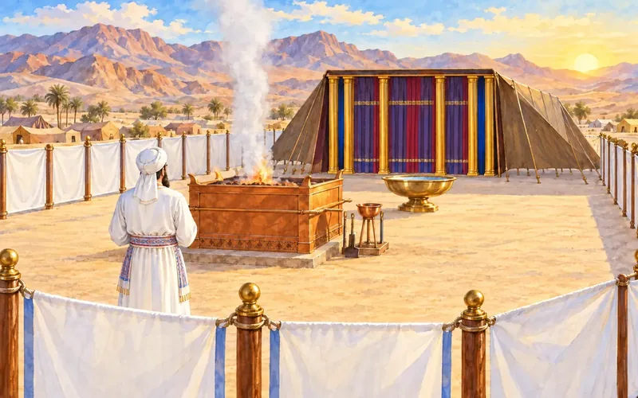
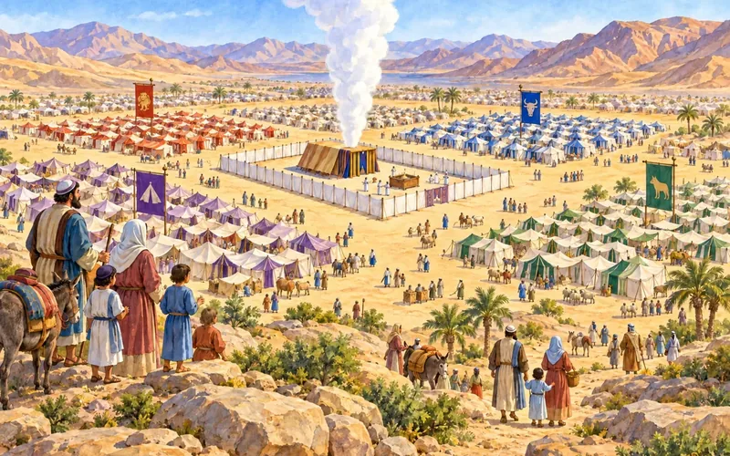

📗
חומש
קטלוג לכל חומש: בראשית, שמות, ויקרא, במדבר ודברים – אלפי דפי עבודה, מצגות, משחקים ומבחנים לפי פרשות
5 פריטים
קטלוגי חמשת החומשים (5)
קטלוג חומרי הוראה – חומש בראשית
6,775 חומרים לכל פרשיות חומש בראשית – דפי עבודה, מצגות, משחקים ומבחנים, עם תמונה לכל חומר, סינון ודירוג
קטלוג חומרים – חומש שמות
7,438 חומרים לכל פרשיות חומש שמות, כולל מצגות Gamma – עם תמונה לכל חומר, סינון ודירוג

קטלוג חומרים – חומש ויקרא
3,889 חומרים לכל פרשיות חומש ויקרא – עם תמונה לכל חומר, סינון ודירוג

קטלוג מאוחד – חומש במדבר
4,262 חומרים לכל פרשיות חומש במדבר – עם תמונה לכל חומר, סינון ודירוג
קטלוג חומרים לפי פרשות – חומש דברים
2,838 חומרים לפי פרשות חומש דברים – שיעורי וידאו, מצגות ודפי עבודה, עם תמונה לכל חומר, סינון ודירוג